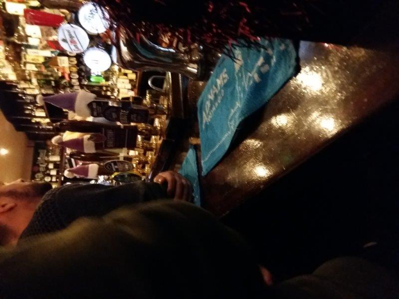
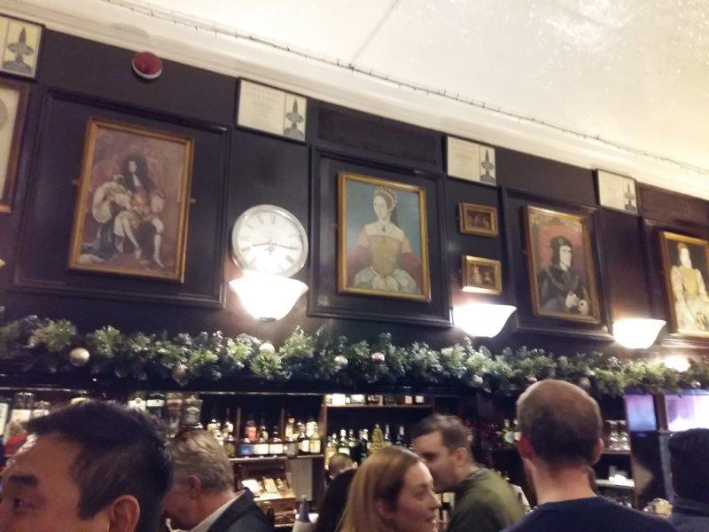
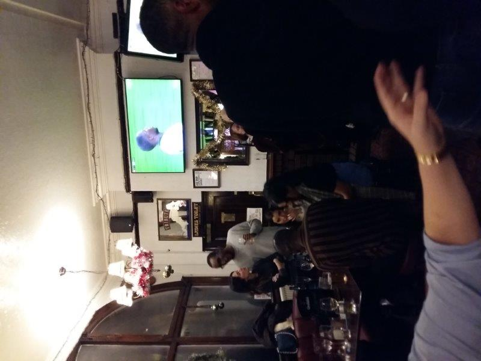
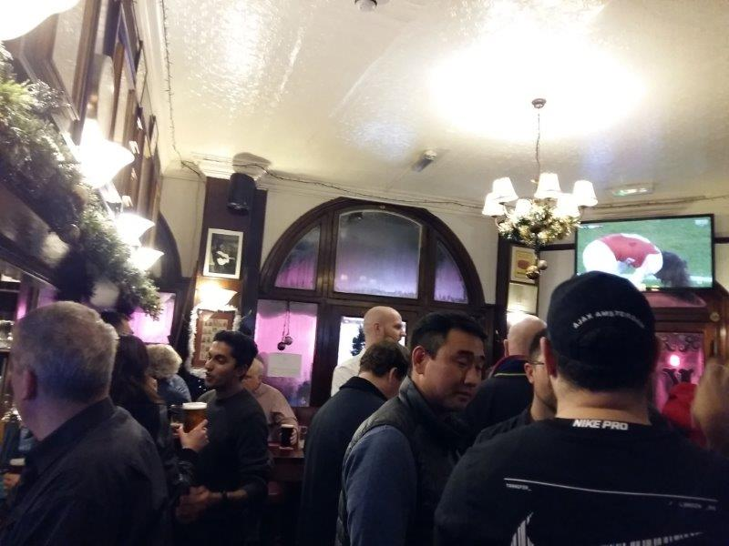
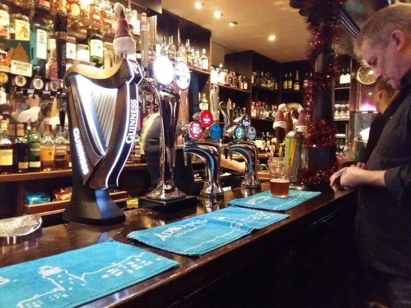

JIMMY BOOZERS' PHOTOS
    
×

The misses has settled in for a double session of Coronation Street. No thanks. I'm out. The Arsenal vs Tottenham game is on. Allegedly there's a decent dirty boozer just off Oxford Street I need to scope out. So I head off for the tube. Off at Goodge Street and the place is quiet. Fitrovia London on a Wednesday night. Lots of offices. Anyway round a corner or 2 and I see it. A beacon in the distance. The windows steamed up. Looks and sounds like a right carry on. Promising. As I walk in first thing that hits me are the tunes. Human League getting blasted through the speakers. Secondly the heat man. It's sweltering, must be nearing 60. Increases my thirst so I head to the bar. Bar staff are a plenty. Not much longer after I touch the bar I'm served. It's £5.10 a Guiness. Pricey. But I guess that's what you get on Fitrovia turf so you can't really complain. I settle in and find a spot where I can see the football, and observe. It's a small pub, and there are 2 screens showing the game which is ample. No sound for the game but that's OK because the tunes are bouncing, which seems quite odd given the interior, but fitting given the crowd. 'Tis the festive season and I reckon a few Christmas parties are going on. Everyone's up for it. There are portraits of royalty all over the walls. At first I think it's odd. Then I remember the name of the pub. Kings and Queens. Ah, I get it. I decide to test myself to see if I could name any. I don't get any. They all look basically the same. Same pout, same clobber. I wish the artists had maybe mixed it up a bit back then instead of drawing everyone the same. Take a risk or two. Maybe through some abstract expressionism into the mix for Queen Elizabeth. Cubism the shit out of Richard III. I notice a platter of sandwiches being offered to some of the tables, cut up in triangle formats. I like that. To me that screams old boozer community. And I'm a sucker for a sandwich. Love them. Best invention ever for me. Forget the wheel pass me a ham and cheese any day of the week. Just when I'm finishing my pint a barman ask me if i want another. I'm a bit like the boy in that Super Size film, where he can't refuse an offer of an upscale Big Mac meal whenever asked. I accept. Summary More of an Old School Boozer than a Dirty Boozer. Quite pricey but at least you can watch the game in a no nonsense pub.
Bevvie Value - 2/5
Football Viewing Arrangements - 3/5
Fellow Clientele - 3/5
Banter & Vibe - 4/5
1 Foley St, Fitzrovia, London W1W 6DL, UK